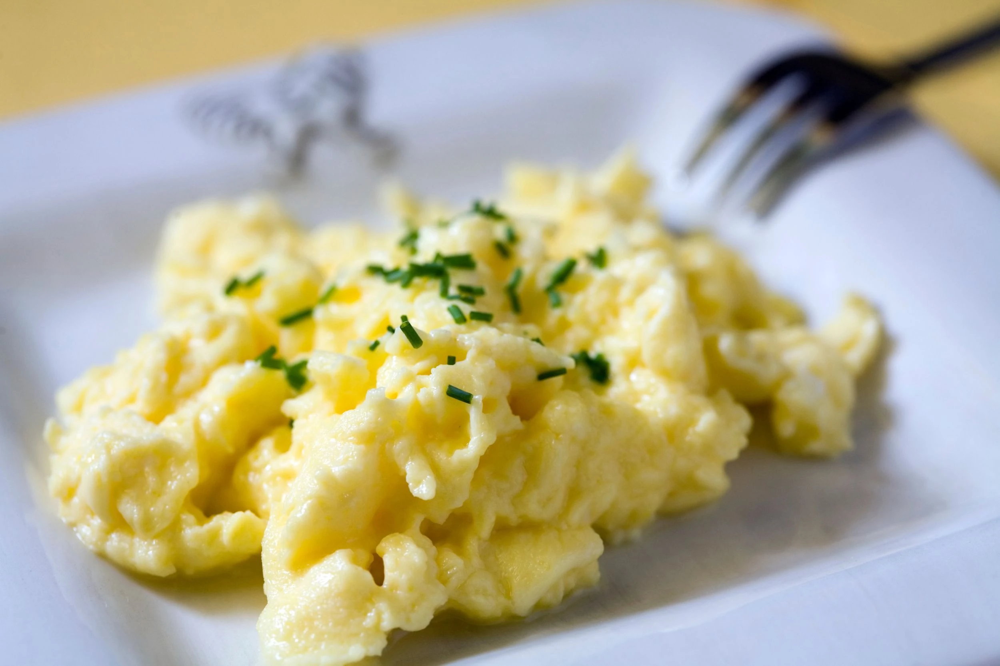

Home
Scrambled Eggs Recipe

Description
Scrambled eggs are a quick, protein-packed breakfast or snack. They’re soft, fluffy, and can be easily customized with herbs, cheese, or vegetables.
Ingredients
Steps
- Crack the eggs into a bowl and beat them until the yolks and whites are fully combined.
- Heat butter or oil in a nonstick pan over medium heat.
- Pour in the eggs and let them cook for a few seconds.
- Gently stir the eggs with a spatula, folding them over as they begin to set.
- Continue stirring until the eggs are softly set and slightly creamy.
- Remove from heat and serve immediately.